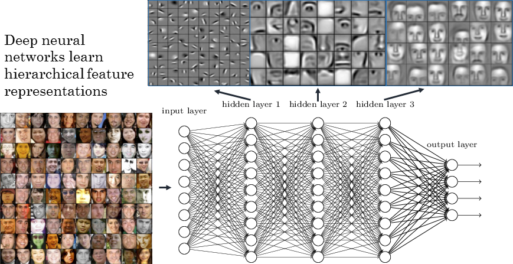

2. Deep neural networks¶
Slides: pdf
2.1. Why deep neural networks?¶
The universal approximation theorem (Cybenko, 1989) states that a shallow network can approximate any mapping function between inputs and outputs. However, if the mapping function is too complex, a shallow network may need too many hidden neurons.
The hidden neurons extract features in the input space: typical characteristics of the input which, when combined by the output neurons, allow to solve the classification task. Problem: the features are not hierarchically organized and cannot become complex enough.
Shallow networks can not work directly with raw images: noise, translation, rotation, scaling… One needs first to extract complex and useful features from the input images in order to classify them correctly.
A MLP with more than one hidden layer is a deep neural network. The different layers extract increasingly complex features.

In practice, training a deep network is not as easy as the theory would suggest. Four main problems have to be solved:
Bad convergence: the loss function has many local minima.
Momentum, adaptive optimizers, annealing…
Long training time: deep networks use gradient descent-like optimizers, an iterative method whose speed depends on initialization.
Normalized initialization, batch normalization…
Overfitting: deep networks have a lot of free parameters, so they tend to learn by heart the training set.
Regularisation, dropout, data augmentation, early-stopping…
Vanishing gradient: the first layers may not receive sufficient gradients early in training.
ReLU activation function, unsupervised pre-training, residual networks…
2.2. Bad convergence¶
The loss function \(\mathcal{L}(\theta)\) of a deep neural network has usually not a single global minimum, but many local minima: irregular loss landscape.

Gradient descent gets stuck in local minima by design. One could perform different weight initializations, in order to find per chance an initial position close enough from the global minimum, but this is inefficient.
2.2.1. Optimizers¶
2.2.1.1. Stochastic gradient descent¶
What we actually want to minimize is the mathematical expectation of the square error (or any other loss) on the distribution of the data.
We do not have access to the true distribution of the data, so we have to estimate it through sampling.
Batch gradient descent estimates the loss function by sampling the whole training set:
The estimated gradient is then unbiased (exact) and has no variance. Batch GD gets stuck in local minima.
Online gradient descent estimates the loss function by sampling a single example:
The estimated gradient has a high variance (never right) but is unbiased on average. Online GD avoids local minima, but also global minima (unstable)…
Stochastic gradient descent samples minibatches of \(K\) ~ 100 examples to approximate the mathematical expectation.
This sampled loss has a high variance: take another minibatch and the gradient of the loss function will likely be very different. If the batch size is big enough, the estimated gradient is wrong, but usable on average (unbiased). The high variance of the estimated gradient helps getting out of local minimum: because our estimation of the gradient is often wrong, we get out of the local minima although we should have stayed in it. The true gradient is 0 for a local minimum, but its sampled value may not, so the parameters will be updated and hopefully get out of the local minimum. Which batch size works the best for your data? You need to use cross-validation, but beware that big batch sizes increase memory consumption, what can be a problem on GPUs.
Another issue with stochastic gradient descent is that it uses the same learning rate for all parameters. In ravines (which are common around minima), some parameters (or directions) have a higher influence on the loss function than others.
{kind=link}
Fig. 2.38 Ravine in the loss function. Source: https://distill.pub/2017/momentum/.¶
In the example above, you may want to go faster in the “horizontal” direction than in the “vertical” one, although the gradient is very small in the horizontal direction. With a fixed high learning rate for all parameters, SGD would start oscillating for the steep parameters, while being still very slow for the flat ones. The high variance of the sampled gradient is detrimental to performance as it can lead to oscillations. Most modern optimizers have a parameter-dependent adaptive learning rate.
2.2.1.2. SGD with momentum¶
One solution is to smooth the gradients over time (i.e. between minibatches), in order to avoid that one parameter is increased by one minibatch and decreased by the next one. The momentum method uses a moving average of the gradient (momentum step) to update the parameters:
\(0 \leq \alpha < 1\) controls how much of the gradient we use for the parameter update (usually around 0.9). \(\alpha=0\) is the vanilla SGD.

When the gradient for a single parameter has always the same direction between successive examples, gradient descent accelerates (bigger steps). When its sign changes, the weight changes continue in the same direction for while, allowing to “jump” over small local minima if the speed is sufficient. If the gradient keeps being in the opposite direction, the weight changes will finally reverse their direction. SGD with momentum uses an adaptive learning rate: the learning is implictly higher when the gradient does not reverse its sign (the estimate “accelerates”).
{kind=link}
Fig. 2.39 The momentum dampens oscillations around ravines. Source: https://distill.pub/2017/momentum/.¶
With momentum, the flat parameters keep increasing their update speed, while the steep ones slow down. SGD with momentum gets rid of oscillations at higher learning rates. The momentum method benefits a lot from the variance of SGD: noisy gradients are used to escape local minima but are averaged around the global minimum.
Note
Check the great visualization by Gabriel Goh on https://distill.pub/2017/momentum/.
2.2.1.3. SGD with Nesterov momentum¶

Fig. 2.40 The momentum method tends to oscillate around the global minimum. Source: https://ikocabiyik.com/blog/en/visualizing-ml-optimizers/.¶
SGD with momentum tends to oscillate around the minimum. The Nesterov momentum corrects these oscillations by estimating the gradient after the momentum update:

Fig. 2.41 Difference between the momentum and Nesterov momentum. Source: https://cs231n.github.io/neural-networks-3/¶
2.2.1.4. RMSprop¶
Instead of smoothing the gradient, what destroys information, one could adapt the learning rate to the curvature of the loss function:
put the brakes on when the function is steep (high gradient).
accelerate when the loss function is flat (plateau).
RMSprop (Root Mean Square Propagation, proposed by Geoffrey Hinton in his lecture http://www.cs.toronto.edu/~tijmen/csc321/slides/lecture_slides_lec6.pdf) scales the learning rate by a running average of the squared gradient (second moment \(\approx\) variance).
If the gradients vary a lot between two minibatches, the learning rate is reduced. If the gradients do not vary much, the learning rate is increased.
2.2.1.5. Adam¶
Adam (Adaptive Moment Estimation, [KB14]) builds on the idea of RMSprop, but uses also a moving average of the gradient.
In short: Adam = RMSprop + momentum. Other possible optimizers: Adagrad, Adadelta, AdaMax, Nadam…
2.2.1.6. Comparison of modern optimizers¶
The different optimizers build on the idea of gradient descent and try to fix the main issues. They have different convergence properties, which can be seen in the figures below.
In practice, SGD with momentum allows to find better solutions (global minimum), but the meta-parameters are harder to find (need for cross-validation). Adam finds slightly poorer solutions, but the parameters \(\beta_1\), \(\beta_2\) and \(\epsilon\) can usually be kept at default, so it is a good idea to start with it, find the NN architecture that solves the problem and then replace it with SGD+momentum to fine-tune the performance.

Fig. 2.42 Source: Alec Radford https://imgur.com/a/Hqolp¶

Fig. 2.43 Source: Alec Radford https://imgur.com/a/Hqolp.¶
Note
The different optimizers are available in keras, see https://keras.io/api/optimizers.
SGD:
optimizer = tf.keras.optimizers.SGD(learning_rate=0.01)
SGD with Nesterov momentum:
optimizer = tf.keras.optimizers.SGD(
learning_rate=0.01, momentum=0.9,
nesterov=True)
RMSprop:
optimizer = tf.keras.optimizers.RMSprop(
learning_rate=0.001, rho=0.9,
momentum=0.0, epsilon=1e-07
)
Adam:
optimizer = tf.keras.optimizers.Adam(
learning_rate=0.001, beta_1=0.9,
beta_2=0.999, epsilon=1e-07)
2.2.2. Hyperparameters annealing¶
Finding the optimal value for the hyperparameters (or metaparameters) of the network is not easy: learning rate \(\eta\), momentum \(\alpha\), etc.

Fig. 2.44 Finding the optimal learning rate is difficult. Source: https://cs231n.github.io/neural-networks-3/¶
For example, choosing \(\eta\) too small leads to very slow learning. Choosing it too big can lead to oscillations and prevent convergence. A better strategy is to start with a big learning rate to “roughly” find the position of the global minimum and progressively decrease its value for a better convergence:
The decrease can be applied after each epoch. \(\beta\) is called the decay rate, usually very small (\(10^{-6}\)). The method is called annealing or scheduling.

Fig. 2.45 Exponentially-decaying learning rate. Source: https://towardsdatascience.com/learning-rate-schedules-and-adaptive-learning-rate-methods-for-deep-learning-2c8f433990d1¶
A simple trick to find a good estimate of the learning rate (or its start/stop value) is to increase its value exponentially for each minibatch at the beginning of learning. The “good” region for the learning rate is the one where the validation loss decreases, but does not oscillate.
{kind=link}
Fig. 2.46 Estimating the optimal range for the learning rate by increasing its value at the beginning of learning. Source https://towardsdatascience.com/advanced-topics-in-neural-networks-f27fbcc638ae.¶
2.2.3. Hyperparameter search¶
Even with annealing, it is tricky to find the optimal value of the hyperparameters. The only option is to perform cross-validation, by varying the hyperparameters systematically and initializing the weights randomly every time. There are two basic strategies:
Grid search: different values of each parameter are chosen linearly (\([0.1, 0.2, \ldots, 0.9]\)) or logarithmically (\([10^{-6}, 10^{-5}, \ldots, 10^{-1}]\)).
Random search: the value are randomly chosen each time from some distribution (uniform, normal, lognormal).

Fig. 2.47 Grid-search vs. random search. Source: http://cs231n.github.io/neural-networks-3/¶
The advantage of random search is that you can stop it anytime if you can not wait any longer. Grid search is very time-consuming, but easy to perform in parallel if you have clusters of CPUs or GPUs (data-parallel).
A more advanced and efficient technique is Bayesian hyperparameter optimization, for example the Tree Parzen Estimator (TPE) algorithm. The idea is to build a probability model of the objective function and use it to select the most promising hyperparameters to evaluate in the true objective function. Roughly speaking, it focuses parameter sampling on the interesting regions.
The hyperopt Python library https://github.com/hyperopt/hyperopt is extremely simple to use:
from hyperopt import fmin, tpe, hp, STATUS_OK
def objective(eta):
# Train model with:
optimizer = tf.keras.optimizers.SGD(eta)
return {'loss': test_loss, 'status': STATUS_OK }
best = fmin(objective,
space=hp.loguniform('eta', -6, -1),
algo=tpe.suggest,
max_evals=100)
print best
2.3. Long training times¶
2.3.1. Importance of normalization¶

If the data is not centered in the input space, the hyperplane (i.e. each neuron) may need a lot of iterations to “move” to the correct position using gradient descent. The initialization of the weights will matter a lot: if you start too far away from the solution, you will need many iterations.
If the data is normalized (zero mean, unit variance), the bias can be initialized to 0 and will converge much faster. Only the direction of the weight vector matters, not its norm, so it will be able to classify the data much faster.

Fig. 2.48 Input data normalization. Source: http://cs231n.github.io/neural-networks-2/¶
In practice, the input data \(X\) must be normalized before training, in order to improve the training time:
Mean removal or zero-centering:
Normalization : mean removal + unit variance:
Whitening goes one step further by first decorrelating the input dimensions (using Principal Component Analysis - PCA) and then scaling them so that the data lies in the unit sphere. It is better method than simple data normalization, but computationally expensive. When predicting on new data, do not forget to normalize/whiten them too!
{kind=link}
Fig. 2.49 Input data whitening. Source: http://cs231n.github.io/neural-networks-2/¶
2.3.2. Batch normalization¶
A single layer can learn very fast if its inputs are normalized with zero mean and unit variance. This is easy to do for the first layer, as one only need to preprocess the inputs \(\mathbf{x}\), but not the others. The outputs of the first layer are not normalized anymore, so learning in the second layer will be slow.

Batch normalization [IS15] allows each layer to normalize its inputs on a single minibatch:
The mean and variance will vary from one minibatch to another, but it does not matter. At the end of learning, the mean and variance over the whole training set is computed and stored. BN allows to more easily initialize the weights relative to the input strength and to use higher learning rates.
The Batch Normalization layer is usually placed between the FC layer and the activation function.It is differentiable w.r.t the input layer and the parameters, so backpropagation still works.

Fig. 2.50 A batch normalization layer should be introduced between the linear net activation and the activation function. Source: http://heimingx.cn/2016/08/18/cs231n-neural-networks-part-2-setting-up-the-Data-and-the-loss/¶
2.3.3. Weight initialization¶
Weight matrices are initialized randomly, but how they are initialized impacts performance a lot There are empirical rules to initialize the weights between two layers with \(N_{\text{in}}\) and \(N_{\text{out}}\) neurons.
Xavier: Uniform initialization (when using logistic or tanh, [GB10]):
He: Gaussian initialization (when using ReLU or PReLU, [HZRS15]):
When using BN, the bias \(b\) can be initialized to 0.
Most frameworks (tensorflow, pytorch) initialize the weights correctly for you, but you can also control it.
2.4. Overfitting¶
The main problem with deep NN is overfitting. With increasing depth, the network has too many weights = free parameters, so its VC dimension is high.
The training error will be very small, but the generalization error high. The network learns the data, not the underlying function.
We need to put constraints on the weights to reduce the VC dimension.
If the weights move freely (i.e. can take any value), the VC dimension is equal to the number of free parameters.
If the weights cannot take any value they like, this implicitely reduces the VC dimension.
In linear classification, the weights were unconstrained: the norm of the weight vector can take any value, as only its direction is important.
Intuition: The norm of the weight vector influences the speed of learning in linear classification. A weight update on a strong weight has less influence than on a weak weight:
as the gradient \(\frac{\partial \mathcal{l}(\theta)}{\partial W}\) does not depend on the norm of the weights, only the output error.
2.4.1. L2 and L1 Regularization¶
\(\mathcal{L}_2\) regularization keeps the \(\mathcal{L}_2\) norm of the free parameters \(||\theta||\) as small as possible during learning.
Each neuron will use all its inputs with small weights, instead on specializing on a small part with high weights. Two things have to be minimized at the same time: the training loss and a penalty term representing the norm of the weights:
The regularization parameter \(\lambda\) controls the strength of regularization:
if \(\lambda\) is small, there is only a small regularization, the weights can increase.
if \(\lambda\) is high, the weights will be kept very small, but they may not minimize the training loss.
Example of the mse loss with \(\mathcal{L}_2\) regularization penalty term:
The gradient of the new loss function is easy to find:
The parameter updates become:
\(\mathcal{L}_2\) regularization leads to weight decay: even if there is no output error, the weight will converge to 0. This forces the weight to constantly learn: it can not specialize on a particular example anymore (overfitting) and is forced to generalize.
\(\mathcal{L}_1\) regularization penalizes the absolute value of the weights instead of their Euclidian norm:
It leads to very sparse representations: a lot of neurons will be inactive, and only a few will represent the input.
2.4.2. Dropout¶
Randomly dropping (inactivating) some neurons with a probability \(p\) between two input presentations reduces the number of free parameters available for each learning phase. Multiple smaller networks (smaller VC dimension) are in fact learned in parallel on different data, but they share some parameters. This dropout method forces the network to generalize [SHK+14]. It is a form of regularization (mathematically equivalent to L2), now preferred in deep networks. p is usually around 0.5.

Fig. 2.51 Each new input \(\mathbf{x}\) (or minibatch of inputs) is learned by a different neural network, but on average, the big neural network has learned the whole dataset without overfitting. Source: https://towardsdatascience.com/preventing-deep-neural-network-from-overfitting-953458db800a¶
2.4.3. Data augmentation¶
The best way to avoid overfitting is to use more data (with variability), but this is not always possible. A simple trick to have more data is data augmentation, i.e. modifying the inputs while keeping the output constant. For object recognition, it consists of applying various affine transformations (translation, rotation, scaling) on each input image, while keeping the label constant. This allows virtually infinite training sets.

Fig. 2.52 Data augmentation. Source : https://blog.keras.io/building-powerful-image-classification-models-using-very-little-data.html¶
2.4.4. Early-Stopping¶
Early-stopping fights overfitting by monitoring the model’s performance on a validation set. A validation set is a set of examples that we never use for gradient descent, but which is also not a part of the test set. If the model’s performance ceases to improve sufficiently on the validation set, or even degrades with further optimization, we can either stop learning or modify some meta-parameters (learning rate, momentum, regularization…). The validation loss is usually lower than the training loss at the beginning of learning (underfitting), but becomes higher when the network overfits.
{kind=link}
Fig. 2.53 Early-stopping by checking the validation loss during training.¶
2.5. Vanishing gradient¶
2.5.1. Principle¶
Contrary to what we could think, adding more layers to a DNN does not necessarily lead to a better performance, both on the training and test set. Here is the performance of neural networks with 20 or 56 layers on CIFAR-10:

Fig. 2.54 Adding more layers does not necessarily increase the training or test accuracy on CIFAR-10. Source: https://towardsdatascience.com/review-resnet-winner-of-ilsvrc-2015-image-classification-localization-detection-e39402bfa5d8¶
The main reason behind this is the vanishing gradient problem. The gradient of the loss function is repeatedly multiplied by a weight matrix \(W\) as it travels backwards in a deep network.
When it arrives in the first FC layer, the contribution of the weight matrices is comprised between:
where \(W_\text{max}\) (resp. \(W_\text{min}\)) is the weight matrix with the highest (resp. lowest) norm, and \(d\) is the depth of the network.
If \(|W_\text{max}| < 1\), then \((W_\text{max})^d\) is very small for high values of \(d\) : the gradient vanishes.
If \(|W_\text{min}| > 1\), then \((W_\text{min})^d\) is very high for high values of \(d\) : the gradient explodes.
Exploding gradients can be solved by gradient clipping, i.e. normalizing the backpropagated gradient if its norm exceeds a threshold.
Vanishing gradients are still the current limitation of deep networks. The solutions include: ReLU activation functions, unsupervised pre-training, batch normalization, residual networks…
{kind=link}
Fig. 2.55 Vanishing gradient problem. Source: https://smartstuartkim.wordpress.com/2019/02/09/vanishing-gradient-problem/¶
2.5.2. Derivative of the activation function¶
{kind=link}
Fig. 2.56 The derivative of the logistic function is 0 for extreme values, what blocks the backpropagation of the gradient.¶
Old-school MLP used logistic or tanh transfer functions for the hidden neurons, but their gradient is zero for very high or low net activations. If a neuron is saturated, it won’t transmit the gradient backwards, so the vanishing gradient is even worse. Deep networks now typically use the ReLU [MHN13] or PReLU activation functions to improve convergence.
PReLU always backpropagates the gradient, so it helps fighting against vanishing gradient.
2.6. Deep neural networks in practice¶
The definition of a deep NN in keras can be as simple as:
from tf.keras.models import Sequential
from tf.keras.layers import Input, Dense, Dropout, Activation, BatchNormalization
from tf.keras.optimizers import Adam
model = Sequential()
model.add(Input(784,))
model.add(Dense(200))
model.add(BatchNormalization())
model.add(Activation('relu'))
model.add(Dropout(0.5))
model.add(Dense(100)
model.add(BatchNormalization())
model.add(Activation('relu'))
model.add(Dropout(0.5))
model.add(Dense(units=10, activation='softmax'))
model.compile(loss='categorical_crossentropy',
optimizer=Adam(lr=0.01, decay=1e-6),
metrics=['accuracy']
)
If you want to successfully train a deep neural network, you should:
Use as much data as possible, with data augmentation if needed.
Normalize the inputs.
Use batch normalization in every layer and at least ReLU.
Use a good optimizer (SGD with momentum, Adam).
Regularize learning (L2, L1, dropout).
Track overfitting on the validation set and use early-stopping.
Search for the best hyperparameters using grid search or hyperopt:
Learning rate, schedule, momentum, dropout level, number of layers/neurons, transfer functions, etc.